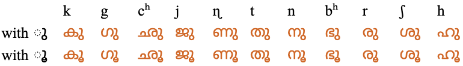
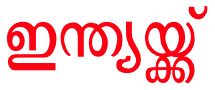
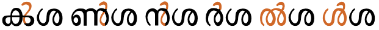

This page gathers together basic information about the Malayalam script and its use for the Malayalam language. It aims (generally) to provide an overview of the orthography and typographic features, and (specifically) to advise how to write Malayalam using Unicode.
വകുപ്പ് 2. ജാതി, മതം, നിറം, ഭാഷ, സ്ത്രീപുരുഷഭേദം, രാഷ്ട്രീയാഭിപ്രായം സ്വത്ത്, കുലം എന്നിവയെ കണക്കാക്കാതെ ഈ പ്രഖ്യാപനത്തില് പറയുന്ന അവകാശങ്ങള്ക്കും സ്വാതന്ത്ര്യത്തിനും സര്വ്വജനങ്ങളും അര്ഹരാണ്. രാഷ്ട്രീയ സ്ഥിതിയെ അടിസ്ഥാനമാക്കി (സ്വതന്ത്രമോ, പരിമിത ഭരണാധികാരത്തോടു കൂടിയതോ ഏതായാലും വേണ്ടതില്ല) ഈ പ്രഖ്യാപനത്തിലെ അവകാശങ്ങളെ സംബന്ധിച്ചേടത്തോളം യാതൊരു വ്യത്യാസവും യാതൊരാളോടും കാണിക്കാന് പാടുള്ളതല്ല.
The Malayalam script is a South Indian script used to write the Malayalam language of theKerala state. Malayalam is a Dravidian language like Kannada, Tamil, and Telugu. Throughout its history, it has absorbed words from Tamil, Sanskrit, Arabic, and English.
The shapes of Malayalam letters closely resemble those of Tamil. Malayalam, however, has a very full and complex set of conjunct consonant forms. ...
In the 1970s and 1980s, Malayalam underwent orthographic reform due to printing difficulties. The treatment of the combining vowel signs u and uu was simplified at this time.These vowel signs had previously been represented using special cluster graphemes where the vowel signs were fused beneath their consonants, but in the reformed orthography they are represented by spacing characters following their consonants.
Malayalam script (Malayāḷalipi; IPA: [mələjɑːɭə lɪpɪ] / Malayalam: മലയാളലിപി) is a Brahmic script used commonly to write the Malayalam language, which is the principal language of Kerala, India, spoken by 35 million people in the world. Malayalam script is also widely used for writing Sanskrit texts in Kerala. Like many other Indic scripts, it is an alphasyllabary (abugida), a writing system that is partially “alphabetic” and partially syllable-based. The modern Malayalam alphabet has 15 vowel letters, 36 consonant letters, and a few other symbols. The Malayalam script is a Vatteluttu alphabet extended with symbols from the Grantha alphabet to represent Indo-Aryan loanwords. The script is also used to write several minority languages such as Paniya, Betta Kurumba, and Ravula. The Malayalam language itself was historically written in several different scripts.
The script is an abugida. Consonants carry an inherent vowel which can be modified by appending vowel-signs to the consonant. See the table to the right for a brief overview of features for the modern Malayalam orthography. (See the key. Character counts exclude ASCII characters.)
The Malayalam script was significantly simplified at the beginning of the 1970s. Prior to the orthographic reform there were many more ligated forms. In particular, the vowels u/ū and r in 2nd position in a consonant were reduced from ligated forms to simple, unchanging glyphs alongside a consonant.
The visible virama in Malayalam sometimes represents a half-u sound, rather than completely killing the inherent vowel. Because of this, Malayalam has a set of syllable-final consonants called chillus that have no vowel sound associated with them.
Malayalam represents consonant clusters by ligation, conjoining, and stacking, particularly in the old orthography, but still to some extent in the new, but also by a visible virama.
There is an archaic set of numbers that include digits beyond the normal 0-9 range, and include a number of fractional symbols.
There is no punctuation, and only a couple of symbols in the Unicode Malayalam block.
The number of characters between spaces can be quite high as sometimes spaces are used to indicate phonological pauses, rather than lexical boundaries.
Text direction
Malayalam text is written horizontally, left to right.
Character lists show:
Vowels
Vowel sounds
Click on the sound groups to see where else in the document each of the sounds are referred to.
The inherent vowel is usually transcribed and pronounced a. So ക is pronounced ka.
Vowel absence & half-u
Malayalam uses ് [U+0D4D MALAYALAM SIGN VIRAMA] (in Malayalam called ചന്ദ്രക്കലcn͓d͓rk͓kl (candrakkala)ʧand̪r̪akkala) to kill the inherent vowel after a consonant, eg. ക്k͓ explicitly represents just the sound k.
However, in modern text, at the end of a word the combination ക്k͓ may also represent the sound kə̆ or kɨ̆ (depending on dialect). The transcription for this is usually ŭ, and it is called half-u.
In older documents the half-u was typically written with a u vowel-sign plus chandrakkala, which is not ambiguous, eg. പാലു്pālu͓pālə̆milk.
The Unicode Standard provides examples of half-u occurring in positions that are not word-final (that is, not immediately before a space), eg. ഐശീല്ംạʲʃīl͓m̽ (aiśīlŭṃ)ai̯ʃiːləmthan ice. In another example, the chandrakkala is attached to an independent vowel letter, and overrides the sound of that letter, eg. എ്ന്നാẹ͓n͓nāənnaːon which day?
The chandrakkala is always written after any vowel-sign and before any final consonant (such as anusvara).
See also clusters, where the chandrakkala can be hidden between consonant clusters, and finals.
Vowel-signs
Other than the inherent vowel, vowel sounds that follow a consonant sound are represented using vowel-signs, eg. കിki. This includes 3 diphthongs, 3 prescript signs, and 3 circumgraphs.
Vowel-signs may also be attached to digits, eg. 355ാം355ām̽355th. u505
Malayalam vowel-signs are all combining characters. In principle a single Unicode character is used per base consonant, even if the vowel-signs appear on both sides of the base consonant, but 3 vowel signs decompose to more than one character. See also multipart. All vowel-signs are typed and stored after the base consonant, and the font puts them in the correct place for display.
All of the vowel-signs are spacing marks, meaning that they consume horizontal space when added to a base consonant.
The single code point per vowel-sign is required by the Unicode Standard u501, however the parts are separated in Unicode Normalisation Form D (NFD).
Whichever approach is used, the vowel-signs must be typed and stored after the consonant characters they surround, and in left to right order.
Vowel-sign placement
The following list shows where vowel-signs are positioned around a base consonant to produce vowels, and how many instances of that pattern there are. The figure after the + sign represents combinations of Unicode characters. This information doesn't take into account the vowel ligation mentioned in the next section.

Ligated forms of consonant plus -u (top) and -ū (bottom). The far left shows ordinary forms.
During orthographic reforms in the 1970s and 1980s a simpler approached was introduced, to make printing easier. Both vowels were represented by an unchanging, postscript vowel-sign as shown below. No change is needed to the underlying code points in Unicode, this is purely a font difference.
ചു␣കു␣ഗു␣ഛു␣ജു␣ണു␣തു␣നു␣ഭു␣രു␣ശു␣ഹു
Standalone vowels
Malayalam represents standalone vowels using a set of independent vowel letters. The set includes a character to represent the inherent vowel sound.
The conjunct ക്ഷk͓ʂ is conventionally regarded as an additional letter. d420
Syllable-final consonants
Words ending with chandrakkala may be pronounced with a half-u sound after. In order to indicate a consonant with no following vowel sound at all the following chillu (or cillakṣaram) characters can be used, eg. വില്ലൻʋil͓ln̽ʋillanvillain.
In older Unicode text the first 5 chillus in the list above were written using the combination consonant+VIRAMA+ZWJ, but since the introduction of the chillu characters in Unicode v5.1 these precomposed characters are recommended.
Malayalam also uses the anusvara and visarga as syllable-final characters, eg. ദുഃഖംduh̽kʰm̽d̪uɦkʰamsorrow.
ം␣ഃ
The anusvara normally represents the sound m, but may be assimilated to another nasal consonant. It can be used multiple times after a vowel, eg. ഈംംംംị̄m̽m̽m̽m̽. u504
Consonant clusters
When the shapes of constituent consonants in a cluster are changed or merged to indicate the lack of intervening vowels, this is referred to as a conjunct.
The absence of a vowel sound between two or more consonants is visually indicated in one of the following ways.
A visible chandrakkala character above the top right of the initial consonant.
Stacked consonants, where the non-initial consonant appears below the initial, usually with a reduced or ligated form.
Conjoined consonants, where consonants sit side-by-side but with some ligation or different forms than usual.
Special 'chillu' shapes for the initial consonant (a special case of the preceding bullet point).
A syllable-final consonant diacritic followed by a regular consonant.
In Unicode, the stacking and conjoining behaviour is achieved by adding ് [U+0D4D MALAYALAM SIGN VIRAMA] between the consonants. The font hides the glyph automatically.
Traditional fonts have more ligatures than modern ones. There doesn't appear to much in the way of a systematic
approach to shaping. With a few exceptions, the conjuncts are specific to particular pairs of characters.
You can see conjunct forms in the conjunct map table. This shows all combinations of two consonants and allows you to observe the effect of changing the font. Images of the table with conjuncts highlighted by coloured dots are available for the Noto Serif Malayalam and Thoolika Traditional Unicode fonts.
Sequences involving more than two consonants in a cluster can combine a variety of methods. The example in to_india shows 3 conjoined consonants in the middle, and a conjoined cluster stacked below another letter at the end.

The word ഇന്ത്യയ്ക്ക്ịn͓t͓yy͓k͓k͓to India in the Thoolika Traditional Unicode font.
ര [U+0D30 MALAYALAM LETTER RA] when non-initial in a cluster is displayed to the left of the other consonant(s) in the reformed orthography, eg. ക്രk͓r. This transposition is done by the font – the typed and stored order remains the same as the spoken order.
When RA follows more than one consonant, it is displayed to the left of the cluster, not just to the left of the preceding consonant, eg. ന്ദ്രn͓d͓r in ചന്ദ്രക്കലcn͓d͓rk͓klʧand̪r̪akkala.
Visible chandrakkala
This is a common option, and was promoted as the default by the orthogrpahic reforms of the 1970s. It is also the fallback if the font doesn't contain conjunct forms for a particular cluster of consonants.
Examples include ട്ഛʈ͓cʰ and ക്റk͓ṙ.
Stacking
The non-initial consonant is drawn below the initial consonant, and with a slightly different shape.
The following list shows stacked conjuncts in the Noto Serif Malayalam font (unless you changed the font for examples on this page).
Stacks tend to be particularly common for geminated consonants, even when those consonants don't participate in other conjunct pairings. In 3 such cases, the second consonant is often represented by a small triangle.
Otherwise, the subjoined consonant may be a reduced version of the original, or may be ligated. Note that LA has a very different shape from normal when in subjoined position.
Conjoined consonants
Conjuncts where the consonants remain side-by-side typically merge the shapes of the consonants.
The isolated, prescript shape for RA was introduced by the reformed orthography. In the old orthography RA as the second element in a conjunct was represented by a ligated swash below the initial consonant.
Examples of consonant+RA ligatures in the old orthography.
The following list shows conjoined conjuncts in the Noto Serif Malayalam font (unless you changed the font for examples on this page). To see the original shapes, click on the conjunct.
In some fonts the initial consonant in a cluster may take a chillu shape, followed by an ordinary glyph for the second character.
In the Thoolika Traditional Unicode font this applies to the following consonants in initial position. The examples all use SHA in the second position. Note that the chillu code points are not used here – this is just font styling on normal consonants.
ക്ശ␣ണ്ശ␣ന്ശ␣ര്ശ␣ല്ശ␣ള്ശ
conjunct_chillus shows the same sequence of characters in the Thoolika Traditional Unicode font. Note how the shape of the second consonant remains the same as normal - there is no ligation or repositioning.

Chillu-style initials used in the Thoolika Traditional Unicode font for consonant clusters.
Before the 1970s, however, a dot or small vertical stroke was used over the following consonant, in a similar way to the repha in other indic scripts, eg. ൎയ. The character ൎ [U+0D4E MALAYALAM LETTER DOT REPH] is used to reproduce this.
This character is not a combining character. It is typed and stored in the same place as you would expect to find the RA + VIRAMA, and then the font needs to position the glyph over the following consonant.
Clusters with റ (RRA)
The conjunct റ്റṙ͓ṙ is always pronounced tta, eg. പാറ്റpāṙ͓ṙpaːttacockroach.
The same word could be spelled പാററpāṙṙ, and until the 1960s, when the stacked version began to appear, would have been, but this would be ambiguous, cf. ടെംപററിʈem̽pṙṙiʈempararitemporary.u506 It would be particularly ambiguous when there are more than 2 RRA characters side by side, eg. compare കിലോമീറ്ററുകൾkilōmīṙ͓ṙṙukɭ̽kiloːmiːṯṯarukaɭkilometers with കിലോമീറററുകൾkilōmīṙṙṙukɭ̽.
If a word with the sound tt is spelled using an unstacked pair of these characters, the pair acts as a single unit with prescript vowels, eg. മാറെറാലിmāṙeṙālimaːṯṯoliecho. To achieve the correct positioning of vowel-signs here, however, it is necessary to use the decomposed forms of the vowel (see the transcription). Otherwise you would end up with മാററൊലിmāṙṙoli, where the prescript part of the vowel is in the wrong place.
Similarly, ൻ്റn͓̽ṙ is always pronounced nta, eg. ആൻ്റോận͓̽ṙōaːntoːproper name.
According to the Unicode Standard, an alternative spelling exists without the stack, ie. ആൻേറാận̽ēṙāaːntoː (note that again we had to split the vowel), but this can also lead to ambiguity.u506
U+200D ZERO WIDTH JOINER can be used before the chandrakkala to produce a traditional conjunct form in fonts that produce the open form by default but have the glyphs for the traditional forms too.
U+200D ZERO WIDTH JOINER used after the chandrakkala should produce a chillu form, but this approach is now deprecated in favour of using the chillu codepoints. See finals.
Unfortunately, the 2nd and 3rd approaches don't work with the Malayalam fonts on my system.
Other letters
The Unicode Malayalam block also contains the following characters with the general property of letter.
ഽ␣ൎ␣ൟ␣ഄ
Combining marks
In addition to the vowel-signs, vocalics, and final consonants already mentioned, the Malayalam block contains only 1 more combining character in common use.
Display technology needs to provide shaping for conjunct formation.
Context-based positioning
Display technology must correctly position prescript vowels to the left of the consonant or consonant cluster, and place the separate glyphs of 2-part vowels around those also.
It must do a similar thing for display of RA using the orthographic reforms.
Baselines & inline alignment
tbd
Font styles
tbd
Structural boundaries & markers
Grapheme boundaries
tbd
Word boundaries
Spaces are often used between words, but it is not uncommon for writers to use spacing to indicate phonological pauses, rather than lexical boundaries. s
Sequences of characters between spaces are often quite long in Malayalam, eg. അറിയപ്പെടുന്നുവെങ്കിലുംạ̄ṙiyp͓peʈun͓nuʋeŋ͓kilum̽.
AL (ordinary alphabetic and symbol characters) requires other characters to provide break opportunities; otherwise, unless tailored rules are applied, no line breaks are allowed between pairs of them.
BA (break after) indicates that it is normal to break after that character.
CP (closing parenthesis) will not cause a break opportunity when appearing in contexts like “(s)he.” In all other respects the breaking behavior of CP and CL are the same.
NU (number) behaves like ordinary characters (AL) in the context of most characters but activate the prefix and postfix behavior of prefix and postfix characters.
PO (postfix numeric) usually follows a numerical expression and may not be separated from preceding numeric characters or preceding closing characters, even if one or more space characters intervene. For example, there is no break opportunity in “(12.00) %”..


{kind=link}
{kind=link}